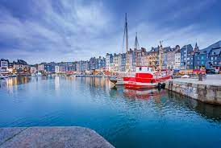

La région Normandie en tant qu'entité administrative a été crée le 1er janvier 2016.
Elle résulte de la fusion de la Basse et de la Haute Normandie, région crée en 1972.
La région
recoupe en très grande partie les limites de la Normandie historique et une portion du comté de Perche, ancienne province du royaume de France disparue en 1789, quand le décret du 22 décembre transforme la Normandie
en cinq département et ajoute une partie du Perche au département de l'Orme

La Normandie se trouve à l’ouest du continent européen et au nord-ouest de la France.
Ses deux façades maritimes (au nord et à l’ouest), de 603 km de longueur, font face à la Manche.
Les territoires limitrophes sont: la Bretagne (Ile et Vilaine), les pays de la Loire (Mayenne,
Sarthe), le Centre-Val de Loire (Eure et Loire), l’Ile de France (Yvelines,Val d’oise) et
la Picardie (Oise et Somme).
Sa superficie est 29 906 km2
La Normandie bénéficie d'un climat tempéré en raison des masses d'air en provenance majoritairement de l'Atlantique.
L’hiver se caractérise par des types de temps le plus souvent humides, frais et venteux, conséquence du décalage vers le sud des influences de la dépréssion d’Islande.
L’été est généralement doux et moins pertubé grâce à la remontée vers lers le nord de l’anticyclone des Açores et à la fréquence plus importante des temps calmes et clairs associés.